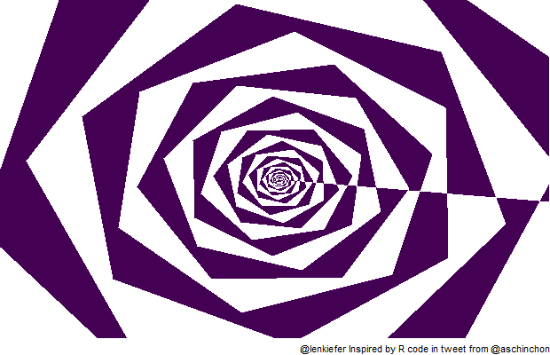

I saw this fun bit of R code in a tweet by user aschinchon.
df <- data.frame(x=0, y=0)
— Antonio S. Chinchón (@aschinchon) August 16, 2018
for (i in 2:500)
{
df[i,1] <- df[i-1,1]+((0.98)^i)*cos(i)
df[i,2] <- df[i-1,2]+((0.98)^i)*sin(i)
}
ggplot2::ggplot(df, aes(x,y)) +
geom_polygon()+
theme_void()#rstats pic.twitter.com/cgNjyk405f
Let’s remix it to make a fun animation. We’ll zoom in and out and have the colors shift.
Click for R code
suppressPackageStartupMessages({
library(tidyverse)
library(tweenr)
library(gifski)
library(viridis)
})
df <- data.frame(x=0, y=0)
for (i in 2:500)
{
df[i,1] <- df[i-1,1]+((0.98)^i)*cos(i)
df[i,2] <- df[i-1,2]+((0.98)^i)*sin(i)
}
# function to make code
myf <- function(rr, fill="#0D0887FF"){
df <- data.frame(x=0, y=0)
for (i in 2:500){
df[i,1] <- df[i-1,1]+((rr)^i)*cos(i)
df[i,2] <- df[i-1,2]+((rr)^i)*sin(i)
}
df$fill <- fill
return(df)
}
# plot
g<-
ggplot(myf(0.98), aes(x,y,fill=fill)) +
geom_polygon()+
scale_fill_identity()+
theme_void()+
labs(caption="@lenkiefer Inspired by R code in tweet from @aschinchon")g
Animate it
We can animate it with gifski and tweenr with the following code.
Click for R code
# change this
# Set to your directory
mydir<-"YOUR_DIRECTORY"
# Create a set of data frames to tween
mylist<-list(myf(.970, viridis(8)[1]),
myf(.975, viridis(8)[2]),
myf(.980, viridis(8)[3]),
myf(.985, viridis(8)[4]),
myf(.990, viridis(8)[5]),
myf(.985, viridis(8)[6]),
myf(.980, viridis(8)[7]),
myf(.975, viridis(8)[8]),
myf(.970, viridis(8)[1])
)
tween.df<-tween_states(mylist,tweenlength=5,statelength=0, ease=rep('cubic-in-out',20), nframes=50)
N <- max(tween.df$.frame)
gif_file <- save_gif({for (i in seq(1:N)){
g<-
ggplot(data=filter(tween.df,.frame==i), aes(x,y,fill=fill)) +
geom_polygon()+
scale_fill_identity()+
theme_void()+
coord_cartesian(xlim=c(-1.5,-0.5), ylim=c(-0.25,0.5))+ # zooom in
labs(caption="@lenkiefer Inspired by R code in tweet from @aschinchon")
print(g)
print(paste(i,"out of",N))
}
}, gif_file= paste0(mydir,"/spiral.gif"),width = 620, height = 400, res = 92, delay=1/20)Running the code yields:

You can play with the colors to speed up or slow down this animation.